In the third lab you are going to create a full CI/CD pipeline for your machine learning model so you can develop, test and deploy machine learning models in an efficient, safe and repeatable manner.
The AWS infrastructure you will be deploying will be modelled using the principle of Infrastructure as Code. Codifying your infrastructure allows you to treat your infrastructure as just code. You can author it with any code editor, check it into a version control system, and review the files with team members before deploying into production.
The lab consist of the following steps:
repo, which is used to read and pull artifacts from public and private repositories into a pipeline
admin:repo_hook, which is used to detect when you have committed and pushed changes to the repository
Make sure to copy your new personal access token now as you will need it later.
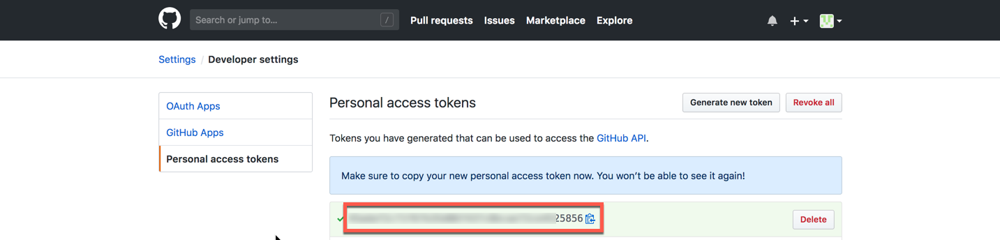
You will need a GitHub repo for your code. In GitHub create a new repository called "ml-id-lab3" and make sure it is public. Do not initialize with a README file and do not add any .ignore or license file. Copy your GitHub repo URL as you will need it later.
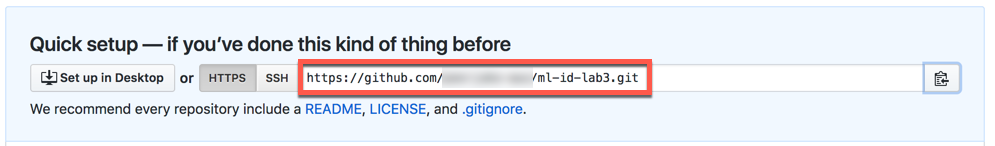
Open up a terminal (or cmd on Windows) and change directory into the directory where you extracted the Immersion Day material earlier. Now initialize your git repository by running the following command lines:
cd Lab3
git init
The output will look something like this:
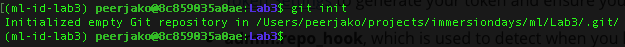
git add .
git commit -am "First commit"
git remote add origin https://github.com/<GITHUBUSER>/ml-id-lab3.git
git push -u origin master
Now validate that you have a CloudFormation directory and Source directory in your GitHub repo.
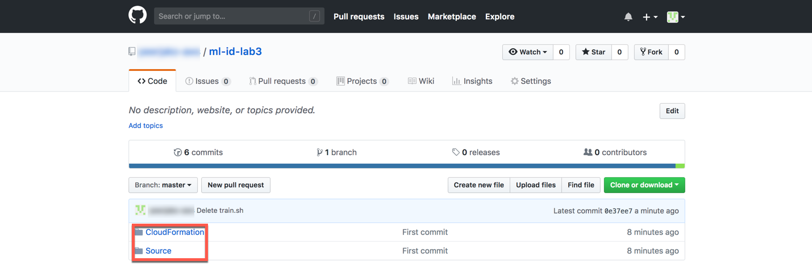
Now that you have a GitHub repo with your AWS infrastructure code and your machine learning python code, you are ready to create a CI/CD pipeline.
In case you have been logged out, sign into the AWS Management Console https://console.aws.amazon.com/, and confirm that you are working in the correct region.
We will create our CI/CD pipeline using a CloudFormation template. Use this link to go to the AWS CloudFormation dashboard.
Click on the Create Stack button.
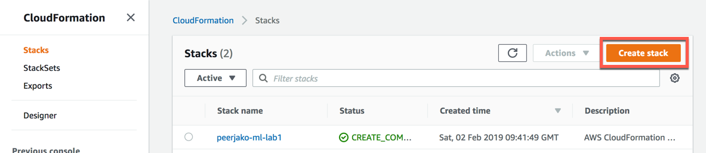
You will create the stack using an existing CloudFormation template from your local disk located in the Lab3/CloudFormation directory of the Immersion Day material. Click on the Upload a template file button and then on the Choose file button.
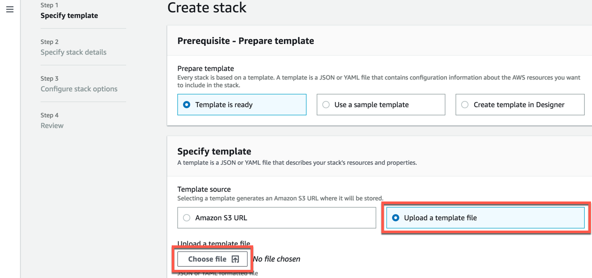
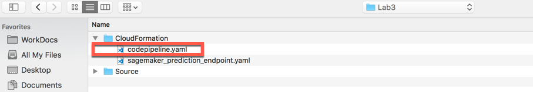
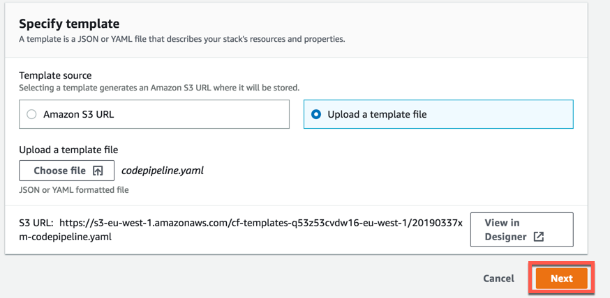
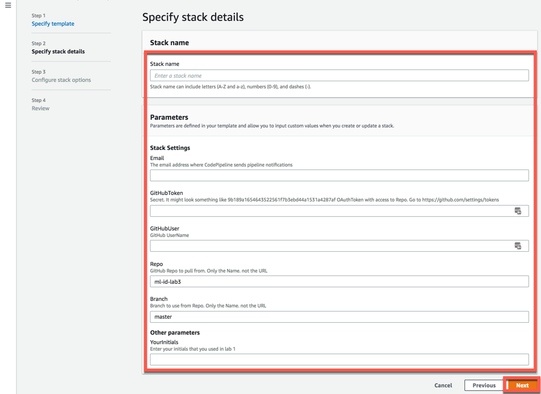
For the stack settings parameters configure them like this
Enter your email address here. This is so you can receive CI/CD notifications.
GitHubToken
This is the GitHub OAuth token you created in the beginning of this lab. It might
look something like this: 9b189a1654643522561f7b3ebd44a1531a4287af
GitHubUser
This is the user name of the GitHub account where you just created the repo.
Repo
This is the name of the GitHub repo you just created. It is probably: ml-id-lab3
Branch
Leave the git branch as: master
YourInitials
This is the initials you used in lab 1. This will make sure lab 3 reuses the bucket and the Glue Data Catalog Database that was created in lab 1.
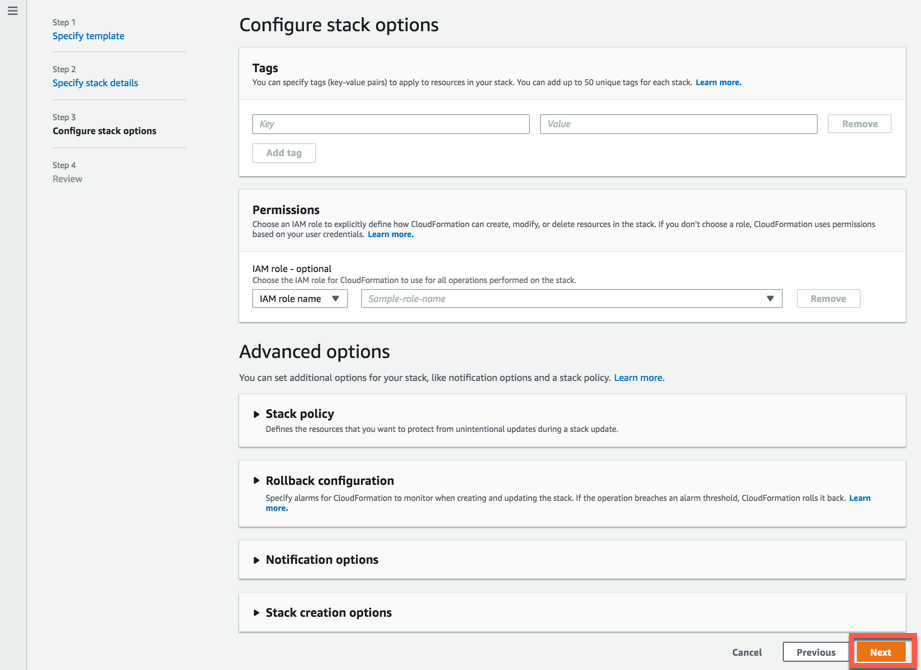
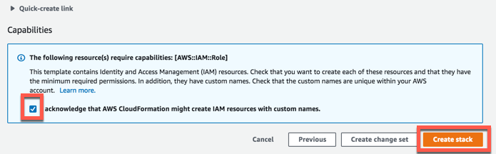
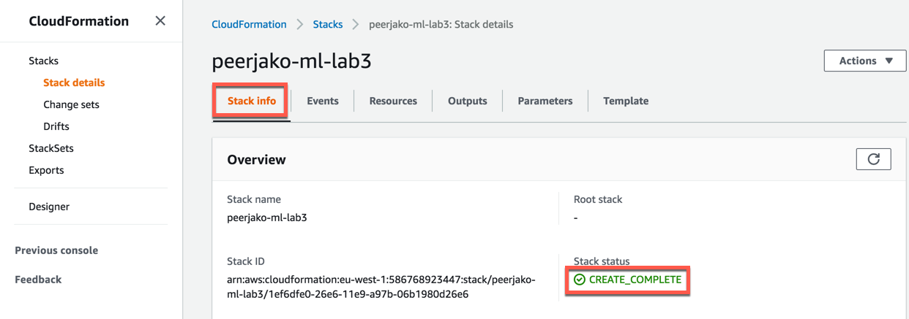
The stack will create an SNS topic to send notifications to the email address entered as a parameter. Upon creation of the topic, a confirmation email will be sent, open the email and confirm the topic subscription by following the Confirm subscription link to receive further notificiations.
The CloudFormation stack will create a CodePipeline that executes your Sagemaker CI/CD pipeline. Go to the CodePipeline console: https://console.aws.amazon.com/codepipeline/home#/dashboard
Click on the name of the pipeline called something like this: [Your-Initials]-ml-id-lab3
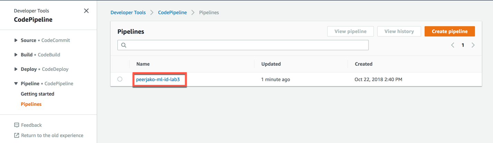
You should see a pipeline that consists of 4 different stages:
Source - this stage pulls the input source files from the GitHub repo you created earlier. The source files are zipped and uploaded to an S3 bucket. This source zip-file will then serve as input to the following pipeline stages. Every time you push new commits into your GitHub repo, the pipeline will execute again automatically pulling your latests commits. You can see the the S3 pipeline artifact bucket in the S3 management console: https://s3.console.aws.amazon.com/s3/home
The bucket is called something like [Your-Initials]-ml-lab3-pipeline-artifact-store
Build_and_Train - This stage runs a CodeBuild build using a python 3.4.5 build container. It runs the prepdata.py and train.py python scripts that you can find in the Source directory of your GitHub repo.
prepdata.py - This python script is very similar to the first part of the python notebook you ran manually in lab 2. It ends up creating a training data file and test data file that can be used by the Sagemaker training. It uses Athena to dynamically get some of the parameters that were hardcoded in the lab 2 notebook.
train.py - This python script is similar to the training part of the python notebook you ran manually in lab 2. It creates a training job in Sagemaker which ends up producing an ML model that you can you can use for ML inference through Sagemaker endpoints.
After the two scripts have executed, CodeBuild packages and uploads the build artifacts to an S3 bucket. In this case the artifacts include the test data file and some config files used in the next pipeline stages.
If you click the Details link of the Build_and_Train stage then you will go to the CodeBuild details page. In the bottom of CodeBuild details page you can see the build logs. You will find these logs very similar to the logs you saw when running the python notebook in lab 2.
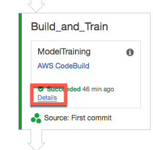
When the Sagemaker QA Endpoint has launched (this can take up to 5 minutes) the Endpoint is tested by running a CodeBuild build that executes the test.py python script found in the Source directory. This python script is very similar to the last part of the python notebook you ran manually in lab 2. It will call the Sagemaker endpoint and compare the inference results with the results from the test data file. If less than 80% of the inferences are not producing the same result as found in the test data file, then an exception is thrown and the pipeline stage will fail.
If you click the Details link of the LaunchEnpoint step then you will go to details of the CloudFormation stack of the Sagemaker Endpoint.
If you click the Details link of the TestEndpoint step then you will go to the CodeBuild build details.
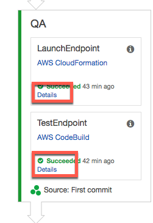
Click the Details link of the TestEndpoint and scroll all the way down on that page to see the build logs. In the build logs you will see the result of the tests including how many tests was correctly predicted. With a Match Rate of 80% you can see that the test barely passes our 80% threshold. In the Bonus part of this lab we will improve this match rate.
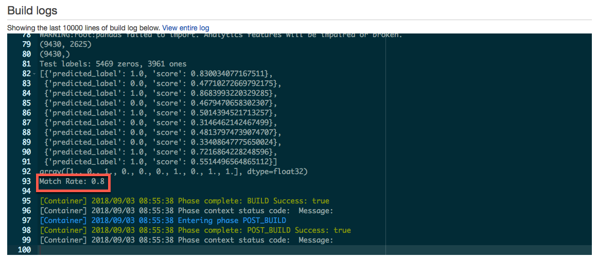
Production - this stage first starts with an approval gate. In order to continue the pipeline you have to manually approve. Click the Review button.
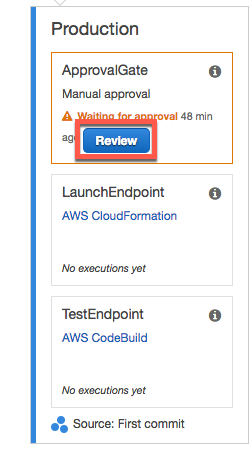
A pop-up is opened. Type in a comment in the Comments text box and click the Approve button.
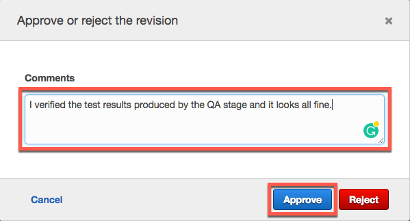
The rest of the production stage creates a Sagemaker production Endpoint and runs an Endpoint test similar to the QA stage. The creation of the production endpoint should take approximately 5 minutes.
Congratulations! You have now successfully created a fully functional CI/CD pipeline for your machine learning project.
If you update the pythons scripts and push the changes into your GitHub repo you will automatically trigger a redeployment of your ML endpoints based on a new version of the ML model. Using a CI/CD pipeline with a QA stage and a manual approval step, you can safely develop and incrementally improve the quality of your ML inference endpoints while using best practices from a DevOps perspective.
In the Sagemaker console you can view the training job, the ML model and the QA and Production endpoints created by the CI/CD pipeline:
Sagemaker Jobs: https://console.aws.amazon.com/sagemaker/home#/jobs
Sagemaker Models: https://console.aws.amazon.com/sagemaker/home#/models
Sagemaker Endpoints: https://console.aws.amazon.com/sagemaker/home#/endpoints
You might already be using a CI/CD solution in your job such as Jenkins, CircleCI or TeamCity. Most of the parts of this lab 3 are reusable and do not depend on AWS CodePipeline. You can use the ideas behind the pipeline and the different parts as an inspiration to create a CI/CD pipeline in the CI/CD solution you are already using at your job.
Automatic Model Tuning eliminates the undifferentiated heavy lifting required to search the hyperparameter space for more accurate models. With Amazon SageMaker Automatic Model Tuning you save significant time and effort in training and tuning your machine learning models.
A Hyperparameter Tuning job launches multiple training jobs, with different hyperparameter combinations, based on the results of completed training jobs. SageMaker trains a “meta” machine learning model, based on Bayesian Optimization, to infer hyperparameter combinations for our training jobs.
You will now change your existing python training code to use Hyperparameter Tuning.
Open the file Lab3/Source/train.py with your favorite text editor.
Go to line 136 and change the variabel no_hyper_parameter_tuning to False and save the changes
no_hyper_parameter_tuning = False
git commit -am "Do Hyperparameter Tuning"
git push -u origin master
CodePipeline will automatically detect that a new commit has been pushed to your github repo and start a new pipeline execution.
You can go and check this here:
https://console.aws.amazon.com/codepipeline/home#/dashboard
When the Build_and_Train stage of the pipeline has started running you can see a Hyperparameter tuning job here:
https://console.aws.amazon.com/sagemaker/home#/hyper-tuning-jobs
You can see how that job has created multiple training jobs here:
https://console.aws.amazon.com/sagemaker/home#/jobs
When all the training jobs has finished the code will get that model from the best performing training job and the pipeline will use that model for QA and Production. In the QA test logs you can verify that the inference quality has improved from an 80% match rate to a 90% match rate.
The code for creating a Hyperparameter Tuner looks like this
my_tuner = HyperparameterTuner(
estimator=fm,
objective_metric_name='test:binary_classification_accuracy',
hyperparameter_ranges={
'epochs': IntegerParameter(1, 200),
'mini_batch_size': IntegerParameter(10, 10000),
'factors_wd': ContinuousParameter(1e-8, 512)},
max_jobs=4,
max_parallel_jobs=4)
Here you can see that epochs, mini_batch_size and factors_wd are the parameters that are being tuned. In a real world scenario you would need more than just 4 jobs (max_jobs) to find the optimal model.
You can read a blog post that goes into the details of Hyperparameter Tuning here:
https://aws.amazon.com/blogs/aws/sagemaker-automatic-model-tuning/